ADMINISTRACJA SYSTEMAMI OPERACYJNYMI / Serwer Web www /part 2 - php
Serwer Web www /part 2 - PHP
Zainstaluj php: 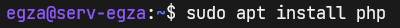 Czestym rozwiązaniem błędów przy instalacji pakietów jest aktualizacja listy repozytorjów: Sprawdź swoją wersję PHP. Ja mam 7.4.3.
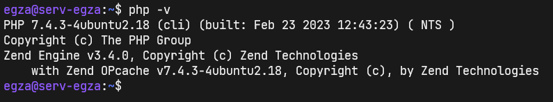
Aktualna wersja to PHP 8.2.0 Beta 3
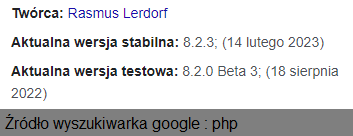
Aby muc skożystać z najnowszej wersji PHP należy dodać linki do
repozytorjum: sudo add-apt-repository ppa:ondrej/php oraz
zatwierdzić dodanie klawiszem ENTER lub anulować kobinacją
CTRL C
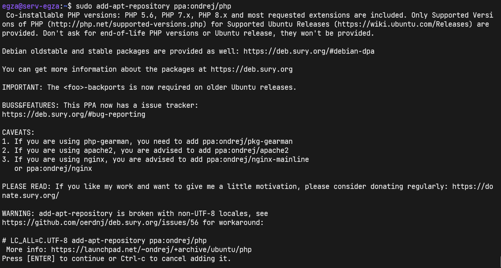
Po całej operacji musisz jeszcze zaktualizować linki dla apt:
Zainstaluj najnowszą wersję, u mnie PHP 8.2.
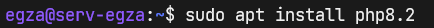
Edytując php8.2.conf zmień engine z Off na On.
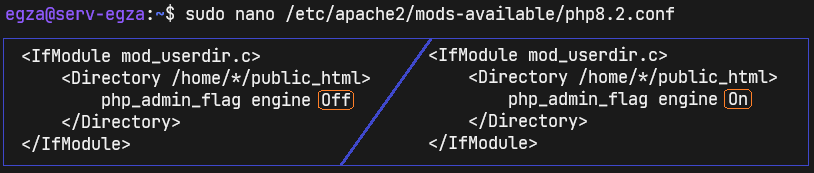
Wyłącz bądź upewnij się że jest wyłączona starsza wersja PHP 7.4.
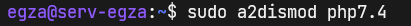
Włącz moduł najnowszej wersji PHP.
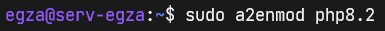
Sam restart usługi apache2 może spowodować w środowiskach wirtualnych błąd
jakoby interpreter php nie działał poprawnie. Zalecam pełny restart
serwera i ponowne połączenie się z nim poprzez SSH.
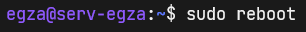
Jak widać działa. Lecz musiałem zrestartować cały serwer i z minutę
odczekać zanim zaczeło działać
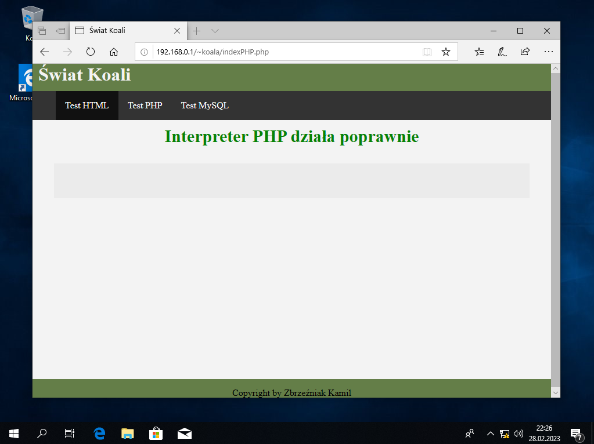
Sprawdź swoją wersję PHP. Ja mam 7.4.3.
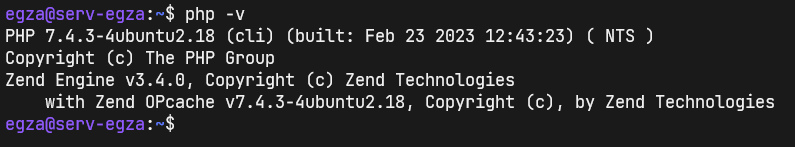
Aktualna wersja to PHP 8.2.0 Beta 3
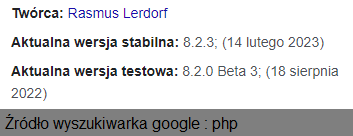
Aby muc skożystać z najnowszej wersji PHP należy dodać linki do
repozytorjum: sudo add-apt-repository ppa:ondrej/php oraz
zatwierdzić dodanie klawiszem ENTER lub anulować kobinacją
CTRL C
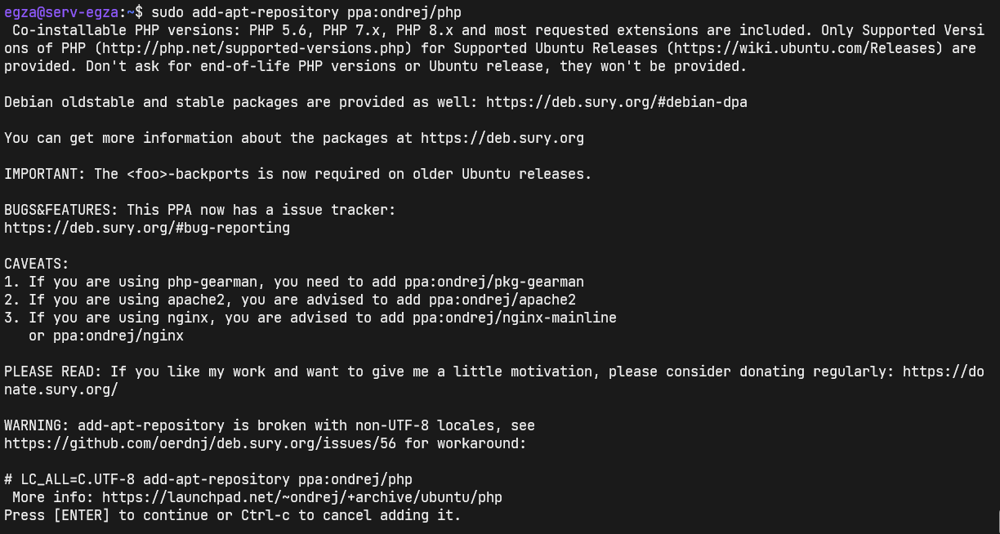
Po całej operacji musisz jeszcze zaktualizować linki dla apt:
Zainstaluj najnowszą wersję, u mnie PHP 8.2.
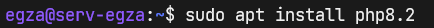
Edytując php8.2.conf zmień engine z Off na On.
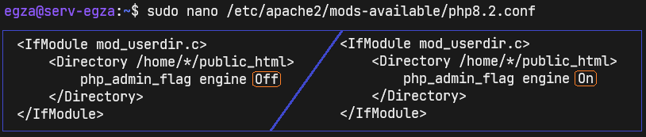
Wyłącz bądź upewnij się że jest wyłączona starsza wersja PHP 7.4.
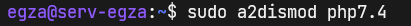
Włącz moduł najnowszej wersji PHP.
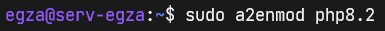
Sam restart usługi apache2 może spowodować w środowiskach wirtualnych błąd
jakoby interpreter php nie działał poprawnie. Zalecam pełny restart
serwera i ponowne połączenie się z nim poprzez SSH.
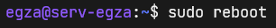
Jak widać działa. Lecz musiałem zrestartować cały serwer i z minutę
odczekać zanim zaczeło działać
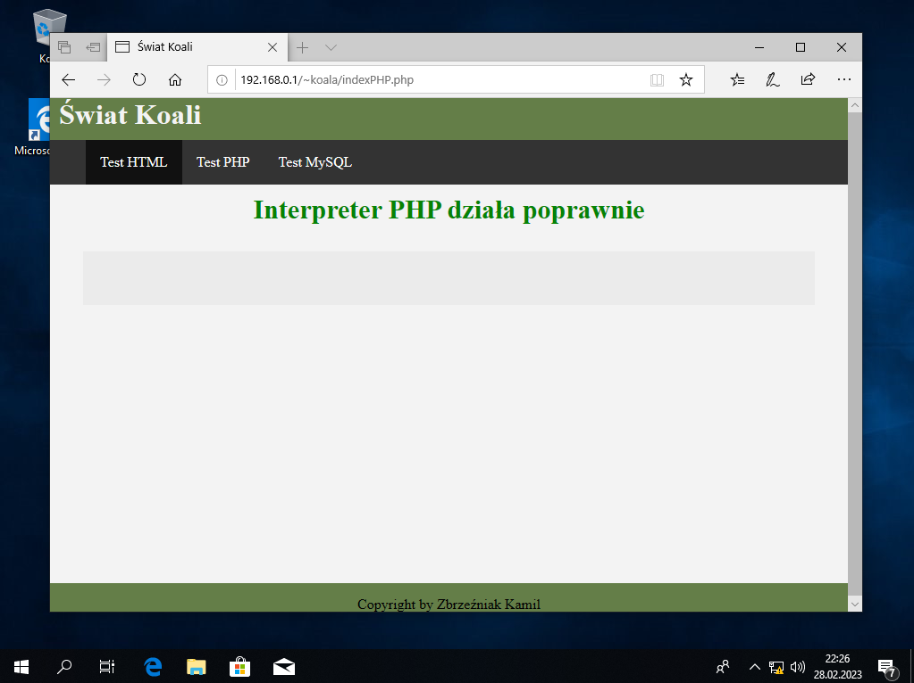